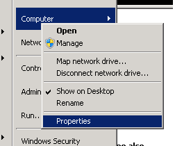
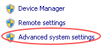
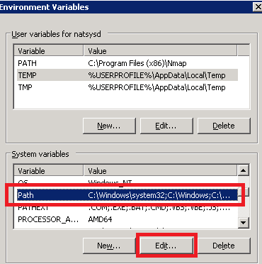
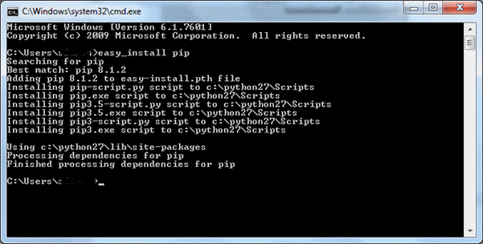
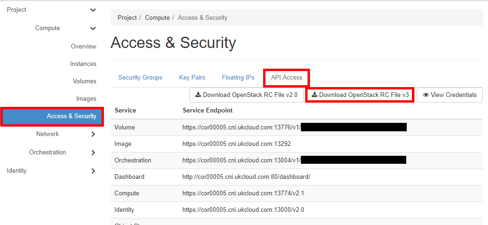

How to use the OpenStack Command Line Client on Microsoft operating systems
Overview
OpenStack has been designed and built specifically for the Linux community utilising the Python programming language. Despite this, it's still possible to use the OpenStack Command Line Client on a Microsoft operating system using PowerShell, and this document outlines the six simple steps to achieve this.
Prerequisites
This document assumes you're running a version of Windows from XP upwards and that Windows PowerShell is already installed and available.
All details outlined in this document have been tested against Windows 7 SP1 Enterprise.
Installation Steps
Install Python runtime and libraries
Download the latest Python 2 release from the Python website:
http://python.org/downloads/windows/
Note
The OpenStack client currently only supports Python 2.7, Python 3+ is unsupported).
After clicking the most recent Python 2 release, download the Windows X86-64 MSI Installer.
Install Python by double-clicking the MSI package that you just downloaded and completing the installation wizard.
Set the environmental variables
For Windows to be aware of Python you need to declare its path as follows:
Open the Computer settings.

Select Advanced system settings.

Select Environment variables.

In the Environment Variables dialog box, find the Path variable in the System variables list and click Edit.

In the Edit System Variable dialog box, in the Variable value field, add the following to the end of the value (make sure to include the semicolons):
;C:\Python27;C:\Python27\ScriptsClick OK
Note
Update the above paths if you choose to change the Python installer defaults.

Close the remaining windows.
Install pip
Open a command prompt with Admin rights by right-clicking on the command prompt icon (when you get a login prompt, enter your admin credentials).
Install pip by entering the following command:
easy_install pipIf successful, you should see a screen like the following:

[!IMPORTANT]
Leave the command prompt open for the next step.
Install the OpenStack Command Line client
Install pip with the following command:
pip install python-openstackclientInstalling the client may take between 1 to 5 minutes depending upon your machine.
Bind your OpenStack credentials
After successful installation, you'll have to download the OpenStack RC file for the project you want to manage.
Log in to the OpenStack Horizon dashboard.
Open the project you want to manage.
From the menu, select Access & Security and then select the API Access tab.
Click Download OpenStack RC File and save the file in a convenient place.

Download the Source-OpenRC.ps1 PowerShell script and save it locally.
As the downloaded PowerShell script is unsigned, you'll need to unblock it by right-clicking the file, selecting Properties, then clicking the Unblock button and clicking OK.

Start Windows PowerShell from the Start menu.
Run the downloaded PowerShell script, and give the path to the downloaded RC file as an argument, for example:
C:\Downloads\Source-OpenRC.ps1 C:\Downloads\project-openrc.shNote
Replace
Downloadswith the directory you saved your files to and replaceproject-openrc.shwith theopenrc.shfilename you downloaded.When prompted, enter your OpenStack project password.
Test your configuration
Now you've installed and configured the everything, you can start using the command line tools.
Start Windows PowerShell.
Test if everything is working with a simple list command:
nova listIf you've started with an empty project, you'll get output similar to the following:
+----+------+--------+------------+-------------+----------+ | ID | Name | Status | Task State | Power State | Networks | +----+------+--------+------------+-------------+----------+ +----+------+--------+------------+-------------+----------+Note
You'll need to run the PowerShell script defined above, and provide your OpenStack project credentials every time you relaunch PowerShell.
Upgrading clients
The community regularly releases updates to the OpenStack CLI, therefore we suggest you check for updates to the client to ensure you have access to all the latest features; this can also help to resolve errors you experience when using the OpenStack CLI.
Upgrade pip
Open a command prompt with Admin rights by right-clicking on the command prompt icon (when you get a login prompt, enter your admin credentials).
Upgrade pip by entering the following command:
python -m pip install --upgrade pipNote
Once successfully upgraded, leave the command prompt open for the next step.
Upgrade the OpenStack Command Line client
Install pip with the following command:
pip install --upgrade python-openstackclientInstalling the client may take between 1 to 5 minutes depending upon your machine.
Feedback
If you have any comments on this document or any other aspect of your UKCloud experience, send them to products@ukcloud.com.